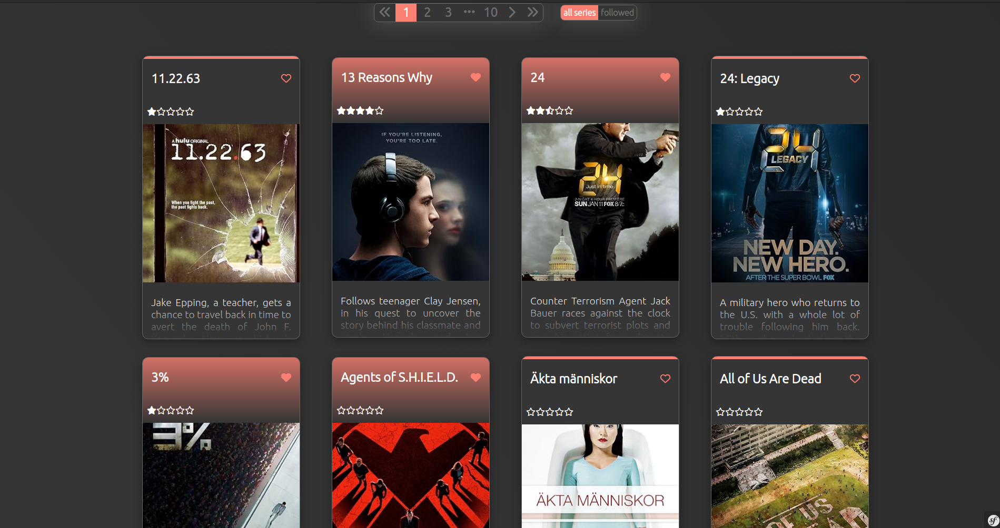

Process

Pour chaque itération :
1- Estimation des coûts
2- Répartition des tâches
3- Implémentation des fonctionnalités du backlog
4- Tests
5- Démo devant le PO


Compétences acquises
1- Symfony
2- Gestion du stess et de la pression
3- Travail et organisation en groupe
4- Méthodologie agile